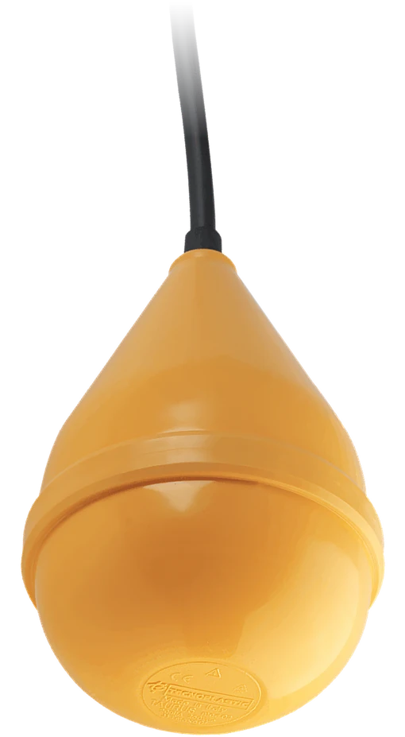
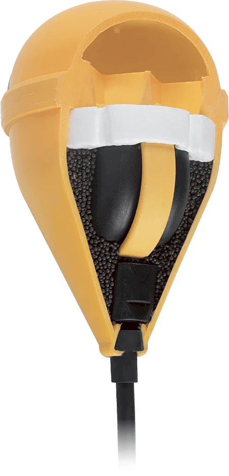
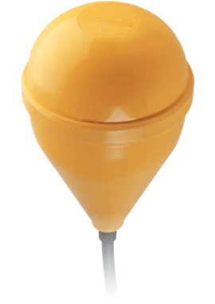
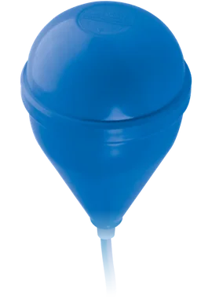
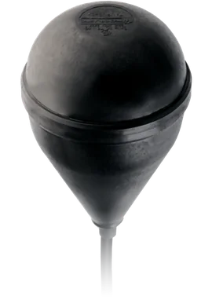
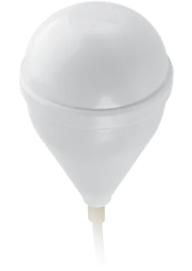
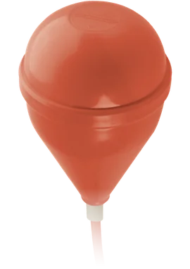
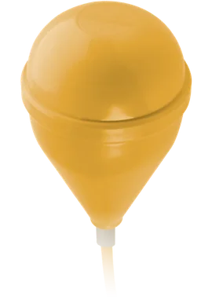
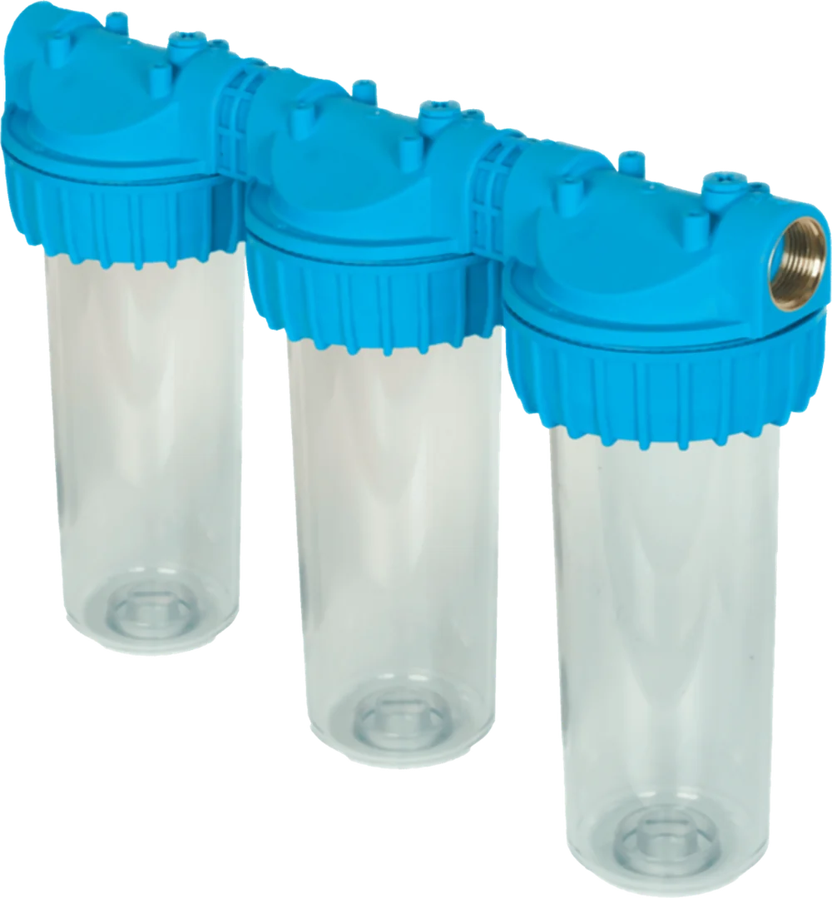
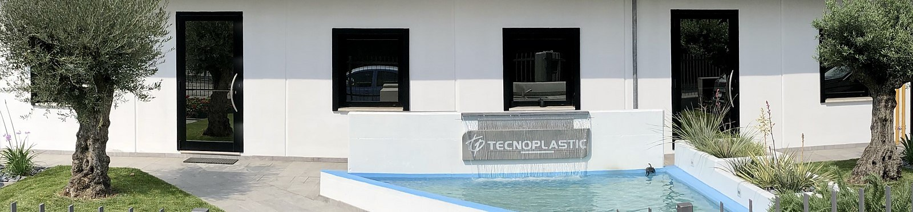

Il cuore della pompa
Interruttori a galleggiante e filtri per l'acqua, progettati e stampati a Saonara dal 1994.

Contrappeso integrato: resta sott'acqua
Un galleggiante dentro un altro galleggiante
I galleggianti tradizionali stanno sulla superficie dell'acqua. Il Taurus, con il contrappeso integrato, rimane sotto. Usato in coppia regola il livello minimo e il massimo: il livello alto avvia la pompa, il livello basso la ferma.

Corpo in polipropilene, IP68. Fino a 20 m di profondità, angolo di attivazione 20° ±5°, 10(8) A 250 Vac, per pompe fino a 1,5 HP. Versioni certificate UL per il Nord America.
Sei Taurus
La stessa costruzione a tre camere, in sei versioni per sei impieghi diversi.

Taurus
Acque reflue

Taurus-Drink
Acqua potabile

Taurus-EX
Ambienti esplosivi

Taurus-Fep
Ambienti chimici

Taurus-SiHF
Alte temperature

Taurus-PUR
Liquidi abrasivi, cavo PUR
In tutto ventitré galleggianti e regolatori di livello: oltre al Taurus, Olympic, Fox, Supertec, Flotec, il Mouse per gli spazi stretti e gli elettronici Spider, Snake e Crab. Più sette accessori per fissarli e collegarli.
Tutti i galleggiantiFiltri Dolphin e Whale
Contenitori per filtri in plastica atossica secondo la normativa ACS, per l'uso permanente in acqua potabile: in casa, nell'industria, per le caldaie e i giardini.
Il giunto intermedio brevettato li unisce in fila; il Whale ha l'anti colpo d'ariete incorporato. Arrivano già montati, con la chiave.
Cartucce in filo avvolto, polipropilene estruso, carboni attivi, polifosfati contro il calcare, acciaio inox lavabile, filo avvolto e carboni insieme. Tutti i filtri

Giunto intermedio brevettato Fino a 11 barDallo stampo al collaudo, nello stesso stabilimento
- 1Progettazione
- 2Stampi
- 3Stampaggio
- 4Assemblaggio
- 5Collaudo
L'intero processo produttivo avviene nel nostro stabilimento di Saonara. Lavoriamo per produttori di pompe, costruttori di stazioni di trattamento acque, produttori di quadri elettrici e per distributori di parti elettriche e idrauliche in tutto il mondo, con distributori ufficiali in Italia, Cipro, Regno Unito e Stati Uniti.
Le prove sui galleggianti
- Ogni pezzo viene testato elettricamente prima dell'inscatolamento.
- Durante la produzione, test in acqua sotto depressione per cercare eventuali infiltrazioni.
- Ogni settimana, test di resistenza a forti pressioni.
- Microinterruttori garantiti per 50.000 cicli, nessun mercurio, cavi senza PVC.
Azienda certificata ISO 9001:2015 da ICIM, dal 2004. Prodotti certificati TÜV, UL, EX, ATEX, EAC, ACS. Tra i Campioni dell'Export 2023 del Sole 24 Ore e di Statista.
Sembriamo un laboratorio artigianale, ma abbiamo la capacità produttiva di una grande azienda
Venerdì 8-13, 14-16
